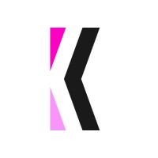

À mon sujet
Bonjour, je m'appelle Jordan Campillo-Duquesne.
Passionné par le développement web et l’UX, je m’investis dans la création d’expériences numériques élégantes et
performantes.
J’aime apprendre, partager et relever de nouveaux défis techniques.
J'ai commencé à apprendre le développement web en octobre 2024, et je suis passionné par ce domaine.
J'ai travaillé sur plusieurs projets personnels et professionnels et je souhaite évoluer dans cet univers
fascinant.
Objectif : Continuer à découvrir de nouvelles technologies pour perfectionner mes compétences.
Mon parcours
- 2024 – Développeur Fullstack chez Kinesso 
- 2024-2026 – Formation BTS SIO (Slam) - IPSSI
- 2021-2023 – BTS MCO (Management Commercial Opérationnel) - Lycée Albert De Mun , Paris
- 2021-2023 – Baccalauréat Pro. Commerce - Lycée Saint Vincent De Paul, Versailles
Compétences
Qualités humaines
- Curieux
- Créatif
- Rigoureux
- Esprit d'équipe
- Autonome